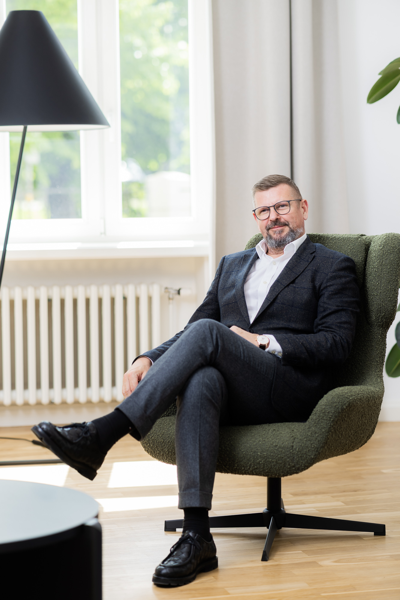

Pēc četriem aizvadītiem gadiem Latvijas attīstības finanšu institūcijas “ALTUM” valdē, esmu atgriezusies finanšu konsultāciju biznesā. ALTUM laikā es pārvaldīju ieguldījumus Baltijas riska kapitāla un privātā kapitāla fondos, kā arī atbildēju par kredītēšanas procesa veiksmīgu norisi. Šī pieredze man ir sniegusi padziļinātas zināšanas par pašreizējo privātā kapitāla tirgu Baltijā, kas lieti noder strukturējot darījumus un piemeklējot atbilstošāko finansējumu un partneri mūsu klientiem. 2025.gada aprīlī tiku ievēlēta par Latvijas privātā un iespējkapitāla asociācijas valdes locekli, kas man sniedz lielisku ieskatu privātā kapitāla tirgū Baltijā un tā galvenajos spēlētājos. Darba pieredze ALTUM man ļauj brīvi orientēties valsts atbalsta fondu sistēmā un sadarboties ar visdažādākajām valsts iestādēm.
Kopumā man ir vairāk kā 10 gadu pieredze banku sektorā strādājot Citadele un Nordea bankas Latvijas filiālē, kur esmu ieņēmusi dažādus amatus strādājot ar korporatīvajiem klientiem. Pateicoties šai pieredzei, esmu ieguvusi plašu kontaktu loku gan banku sektorā, gan citās nozarēs Latvijā un Baltijā.
Kopumā uzņēmējdarbību pārzinu ne tikai no excel tabulām un kredītkomitejām – piecus gadus esmu pavadījusi kā divu lielāko atkritumu apsaimniekošanas uzņēmumu Latvijā, “Clean R” un “Vides Pakalpojumu Grupa” (tagad “Pilsētvides Serviss”) CEO. Pašlaik esmu arī telekomunikāciju uzņēmuma “TET” padomes locekle.

Jānis
Buks
Partneris
Esmu finanšu nozares eksperts ar vairāk kā 35 gadu pieredzi. Pēc Latvijas Universitātes Juridiskās fakultātes absolvēšanas, es uzsāku karjeru kā jurists Latvijas Investīciju bankā. Pēc trim nostrādātiem gadiem banku sektorā, pārgāju uz līzinga nozari, kas tolaik Latvijā vēl nebija attīstīta – tāpēc ar lepnumu sevi saucu par “Latvijas līzinga nozares tēvu”.
Daudzu gadu garumā biju līzinga uzņēmumu vadītājs Latvijā un Baltijā – Merita Nordbanken, SEB, Hypo Vereinsbank un UniCredit grupās. Tieši UniCredit grupā biju iesaistīts Baltijas biznesa tīkla izveidē, kā arī darbojos kā UniCredit Leasing Russia izpilddirektors un UniCredit Leasing Ukraine padomes priekšsēdētāja vietnieks.
2010.gadā izlēmu atgriezties Latvijā un kļuvu par Nordea Bank Latvija korporatīvā biznesa vadītāju. Tajā laikā Nordea bija korporatīvo klientu banka ar aptuveni 2,2 miljardu eiro lielu kredītportfeli un 1500 korporatīvajiem klientiem - vēl pat šodien es varu lielāko daļu no tiem saukt par personīgām paziņām.
Kopš 2012. gada biju Nordea Bank Latvija vadītājs un arī Nordea Baltijas biznesa segmenta valdes loceklis. 2017. gada oktobrī notika Nordea Latvija apvienošanās ar DnB banku, izveidojot jaunu banku – Luminor. Tajā es vadīju Luminor korporatīvo biznesu (portfelis ap 2,8 miljardiem eiro), paralēli ieņemot Luminor Latvija valdes locekļa amatu.
Savas karjeras laikā Nordea un Luminor bankās esmu strādājis vairākās profesionālās komandās, kas darbojušās pie sarežģītiem korporatīvajiem darījumiem – tostarp uzņēmumu iegādēm un pārdošanām, sindicētajiem aizdevumiem un starptautiskiem finansēšanas projektiem. Šī pieredze un kontakti tagad ir neatņemama daļa no “IJ Birojs” ikdienas darba.
2018.gada beigās personīgu iemeslu dēļ nolēmu pamest Luminor. 2019. gada aprīlī kļuvu par vienas no vadošajām Baltijas farmācijas kompānijām “Olainfarm” padomes locekli. Uzņēmums tolaik bija kotēts Nasdaq Riga biržā, kas man sniedza lielisku pieredzi biržas uzņēmuma vadībā un izpratni par riskiem un ieguvumiem, ko sniedz publiskā kotācija. Kopš tā laika “Olainfarm” ir pametis biržu, ieguvis jaunus īpašniekus, veicis rebrendingu (tagad “Olpha”) un mainījis savus mērķa tirgus no Krievijas un Baltkrievijas uz Rietumu valstīm.